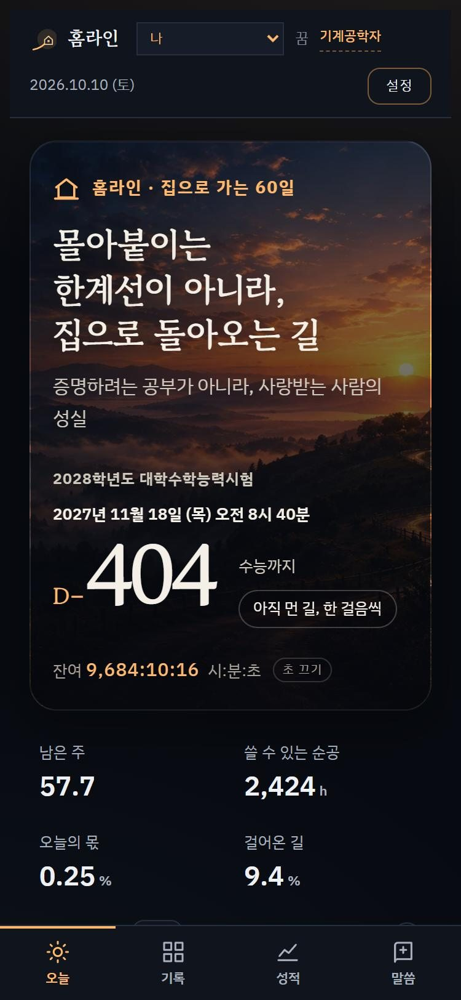

<!doctype html>
<html lang="ko">
<head>
<meta charset="utf-8">
<meta name="viewport" content="width=device-width,initial-scale=1">
<title>홈라인 소개 영상</title>
<link rel="stylesheet" href="fonts/gf/local.css">
<style>
/* 홈라인 팔레트 : 먼 나라의 밤 → 아버지 집의 새벽빛 */
:root{--night:#05070C;--ground:#070A10;--s:#0F141D;--s2:#161D29;--l:#252F3E;--ls:#19212D;
  --ink:#F4F0E8;--mute:#B9B2A6;--faint:#9DA4B2;--lamp:#FFB86C;--ember:#FF8A3D;--far:#8EA6D4;--field:#D49A7C;
  --red:#E5483B;--go:#A8CC8C;--rest:#3C5566;--under:#7C5A35;
  --serif:'Gowun Batang',serif;--sans:'IBM Plex Sans KR',sans-serif}
*{box-sizing:border-box}
html,body{margin:0;width:100%;height:100%;background:#000;overflow:hidden}
body{font-family:var(--sans);color:var(--ink);-webkit-font-smoothing:antialiased;word-break:keep-all}
#stage{position:absolute;left:0;top:0;width:1920px;height:1080px;overflow:hidden;background:var(--night);transform-origin:0 0}
.L{position:absolute;left:0;top:0;width:1920px;height:1080px;pointer-events:none}
.scene{position:absolute;left:0;top:0;width:1920px;height:1080px;display:none;overflow:hidden;transform-origin:960px 540px}
.a{position:absolute}
.img{position:absolute;background-repeat:no-repeat;background-size:cover}
.kt{position:absolute;white-space:nowrap}
.kt .ln{display:block}
.kt .wd{display:inline-block;white-space:nowrap}
.kt .c{display:inline-block;opacity:0;transform-origin:50% 80%}
.serif{font-family:var(--serif);font-weight:700;letter-spacing:-.02em}
.lamp{color:var(--lamp)} .redc{color:var(--red)} .farc{color:var(--far)} .fieldc{color:var(--field)} .mutec{color:var(--mute)} .faintc{color:var(--faint)}
.shade{text-shadow:0 2px 28px rgba(0,0,0,.8)}
.rays{position:absolute;width:3400px;height:3400px;left:-1700px;top:-1700px;background:repeating-conic-gradient(from 0deg,rgba(255,205,140,.26) 0deg 5deg,rgba(255,205,140,0) 5deg 15deg);
  -webkit-mask-image:radial-gradient(circle,#000 0%,rgba(0,0,0,.55) 16%,transparent 50%);mix-blend-mode:screen}
.raysw{position:absolute;width:0;height:0;opacity:0}
.pill{display:inline-block;font-family:var(--sans);font-weight:600;font-size:36px;color:var(--ink);padding:12px 30px;border-radius:999px;background:rgba(255,184,108,.12);border:2px solid rgba(255,184,108,.45);white-space:nowrap}
.arr{display:inline-block;color:var(--lamp);font-size:34px;margin:0 6px}
.phone{position:absolute;border-radius:52px;padding:12px;background:#0B0B0D;box-shadow:0 0 0 2px #2A2622,0 40px 100px rgba(0,0,0,.65),0 0 140px rgba(255,184,108,.14)}
.phone .scr{position:relative;width:100%;height:100%;border-radius:40px;overflow:hidden;background:#000}
.phone img{position:absolute;inset:0;width:100%;height:100%;object-fit:cover;object-position:top}
.stk{position:absolute;display:flex;align-items:baseline;gap:10px;padding:13px 22px;border-radius:20px;background:rgba(22,17,11,.94);border:2px solid rgba(255,184,108,.55);color:var(--ink);font-size:24px;font-weight:600;white-space:nowrap;box-shadow:0 18px 44px rgba(0,0,0,.55),0 0 36px rgba(255,184,108,.24);opacity:0}
.stk b{font-family:var(--serif);font-size:36px;line-height:1;color:var(--lamp)}
.card{position:absolute;background:var(--s);border:2px solid var(--l);border-radius:22px;box-shadow:0 24px 60px rgba(0,0,0,.45)}
.sonc{position:absolute;width:440px;height:560px;border-radius:24px;overflow:hidden;border:2px solid rgba(255,255,255,.08);background:#05070C url(hl-story.webp) no-repeat;background-size:300% auto;opacity:0}
.sonc::before{content:"";position:absolute;inset:0;background:linear-gradient(180deg,rgba(5,7,12,0) 35%,rgba(5,7,12,.9) 100%)}
.sonc .pl{position:absolute;top:22px;left:22px;font-size:21px;color:rgba(244,240,232,.85);background:rgba(5,7,12,.55);padding:4px 14px;border-radius:999px}
.sonc .nm{position:absolute;left:28px;bottom:70px;font-family:var(--serif);font-weight:700;font-size:44px;text-shadow:0 2px 14px rgba(0,0,0,.8)}
.sonc .hw{position:absolute;left:28px;bottom:28px;font-size:23px;color:#D9D2C6}
.dot{position:absolute;width:62px;height:62px;border-radius:50%;border:2.5px solid var(--l);display:grid;place-items:center;font-size:24px;font-weight:600;opacity:0}
</style>
</head>
<body>
<div id="stage">
  <canvas id="bg" class="L" width="1920" height="1080"></canvas>
  <div id="scenes" class="L"></div>
  <canvas id="fx" class="L" width="1920" height="1080"></canvas>
  <div id="sweep" class="L" style="overflow:hidden"></div>
  <div id="bloom" class="L" style="opacity:0"></div>
  <canvas id="grain" class="L" width="960" height="540" style="width:1920px;height:1080px;mix-blend-mode:overlay;opacity:.32"></canvas>
  <div class="L" style="background:radial-gradient(ellipse 75% 75% at 50% 50%,rgba(0,0,0,0) 58%,rgba(0,0,0,.5) 100%)"></div>
  <div id="bar" class="a" style="left:0;top:0;height:5px;width:1920px;transform-origin:0 50%;transform:scaleX(0);background:linear-gradient(90deg,#E5483B,#FF8A3D,#FFB86C)"></div>
  <div id="black" class="L" style="background:#000;opacity:1"></div>
</div>
<svg width="0" height="0" style="position:absolute"><defs><filter id="hb" x="-5%" y="-5%" width="110%" height="110%"><feGaussianBlur id="hbS" stdDeviation="0 0"/></filter></defs></svg>
<script>
(function(){
"use strict";
const W=1920,H=1080,DUR=66,FPS=60;
const QS=new URLSearchParams(location.search), CAPTURE=QS.has('capture');
const clamp=(x,a=0,b=1)=>x<a?a:x>b?b:x, lerp=(a,b,t)=>a+(b-a)*t, inv=(a,b,x)=>clamp((x-a)/(b-a));
const sstep=(a,b,x)=>{const t=inv(a,b,x);return t*t*(3-2*t);};
const E={oC:x=>1-Math.pow(1-x,3),iC:x=>x*x*x,ioC:x=>x<.5?4*x*x*x:1-Math.pow(-2*x+2,3)/2,ioQ:x=>x<.5?8*x*x*x*x:1-Math.pow(-2*x+2,4)/2,
  oX:x=>x>=1?1:1-Math.pow(2,-10*x),bk:(x,s=1.6)=>1+(s+1)*Math.pow(x-1,3)+s*Math.pow(x-1,2),sine:x=>-(Math.cos(Math.PI*x)-1)/2};
function rng(a){return function(){a|=0;a=a+0x6D2B79F5|0;let t=Math.imul(a^a>>>15,1|a);t=t+Math.imul(t^t>>>7,61|t)^t;return((t^t>>>14)>>>0)/4294967296;};}
const $=id=>document.getElementById(id);
function mk(p,cls,html,css){const d=document.createElement('div');if(cls)d.className=cls;if(html!=null)d.innerHTML=html;if(css)d.style.cssText=css;p.appendChild(d);return d;}
const f2=v=>(+v).toFixed(2), f4=v=>(+v).toFixed(4);
function T(el,x,y,s,r,o){el.style.transform=`translate(${f2(x)}px,${f2(y)}px) rotate(${f2(r||0)}deg) scale(${f4(s)})`;if(o!==undefined)el.style.opacity=f4(clamp(o));}
// 뒤로 살짝 넘치며 튀어나오기 (back.out)
function popv(t,t0,d=.7,s=1.6){const p=inv(t0,t0+d,t);return t<t0?0:E.bk(p,s);}

/* ---------- 효과 레지스트리 (오디오와 공유) ---------- */
const SFX=[],BURSTS=[],BLOOMS=[];
const R=rng(20261010);
function sfx(t,type,o){SFX.push(Object.assign({t:+t.toFixed(4),type},o||{}));}
// 불씨: 빛이 번지는 작은 알갱이. vy<0 이면 떠오른다
function embers(o){const r=rng(o.seed??Math.floor(R()*1e9)),ps=[];
  for(let i=0;i<o.n;i++){const a=(o.dir??0)+(r()-.5)*(o.spread??Math.PI*2), v=o.sp*(.3+r()*.9);
    ps.push({vx:Math.cos(a)*v,vy:Math.sin(a)*v,life:o.life*(.55+r()*.7),s:(o.size||2.6)*(.5+r()),c:o.cols[Math.floor(r()*o.cols.length)],ph:r()*6.28,wb:r()*18});}
  BURSTS.push({t:o.t,x:o.x,y:o.y,ps,k:o.drag??1.4,vt:o.vt??60});}
function bloom(t,a,c,inD,outD,x,y){BLOOMS.push({t,a,c,inD:inD||.6,outD:outD||2,x:x??960,y:y??594});}
const WARM=['#FFE2B0','#FFB86C','#FF8A3D','#FFD58A'], WARMW=WARM.concat(['#FFF6E8']), REDS=['#FF6B5B','#E5483B','#FF8A3D','#FFC2A8'];

/* ---------- 글자 : 성경 장면은 조용히 떠오르고(rise), 앱 장면은 톡톡 튄다(pop) ---------- */
function kt(parent,o){
  const el=mk(parent,'kt'+(o.serif?' serif':''),'',`left:${o.align==='center'?0:o.x}px;top:${o.y}px;font-size:${o.size}px;line-height:${o.lh||1.3};${o.align==='center'?'width:1920px;text-align:center;':''}${o.css||''}`);
  if(o.cls) el.className+=' '+o.cls;
  const chs=[]; let k=0; const r=rng(o.seed||3);
  o.lines.forEach(line=>{const ln=document.createElement('span');ln.className='ln';
    (Array.isArray(line)?line:[{s:line}]).forEach(seg=>{const sp=document.createElement('span');if(seg.c)sp.className=seg.c;
      seg.s.split(/(\s+)/).forEach(tok=>{if(!tok)return;if(/^\s+$/.test(tok)){sp.appendChild(document.createTextNode(' '));return;}
        const w=document.createElement('span');w.className='wd';
        for(const ch of tok){const c=document.createElement('span');c.className='c';c.textContent=ch;w.appendChild(c);chs.push({el:c,i:k,r0:(r()-.5)*20});k++;}
        sp.appendChild(w);});
      ln.appendChild(sp);});
    el.appendChild(ln);});
  return {el,chs,o};
}
function rkt(K,t){const o=K.o, st=o.st??.035;
  const fo=o.out!=null?1-E.oC(inv(o.out,o.out+(o.outd||.45),t)):1;
  const dm=o.dim?1-o.dim[1]*sstep(o.dim[0],o.dim[0]+.6,t):1;
  for(const c of K.chs){const t0=o.t+c.i*st, tau=t-t0; let op=0,y=0,s=1,r=0;
    if(tau>=0){ if(o.mode==='pop'){const b=E.bk(clamp(tau/.7),1.6);op=clamp(tau/.14);y=(1-b)*.4*o.size;s=lerp(.55,1,b);r=c.r0*(1-b);}
      else {const e=E.oC(clamp(tau/(o.dur||.9)));op=e;y=(1-e)*(o.rise??.22)*o.size;} }
    if(o.punch!=null&&t>=o.punch+c.i*.05){const q=clamp((t-o.punch-c.i*.05)/.6);s*=lerp(1.28,1,E.bk(q,1.7));y-=(1-E.bk(q,1.7))*8;}
    if(o.fall!=null&&t>=o.fall+c.i*.05){const q=clamp((t-o.fall-c.i*.05)/.45);y+=E.iC(q)*o.size*.5;op*=1-q;r+=c.r0*q;}
    c.el.style.opacity=f4(op*fo*dm); c.el.style.transform=`translate(0,${f2(y)}px) rotate(${f2(r)}deg) scale(${f4(s)})`;}}

/* ---------- 장면 ---------- */
const SC=[]; const host=$('scenes');
function scene(id,a,b,r){const d=mk(host,'scene','');d.id=id;const s={id,a,b,el:d,r};SC.push(s);return s;}
function img(parent,src,css){return mk(parent,'img','',`background-image:url(${src});${css}`);}
// 배경 그림: 채우기(cover) + 천천히 다가가기
function kb(el,t,a,b,s0,s1,br0,br1,extra){const u=E.sine(inv(a,b,t));el.style.transform=`scale(${f4(lerp(s0,s1,u))})`+(extra||'');el.style.filter=`brightness(${f4(lerp(br0,br1,u))})`;}
const LOGO=(id,sz)=>`<svg id="${id}" viewBox="0 0 512 512" width="${sz}" height="${sz}" style="display:block;overflow:visible">
<g id="${id}r"><rect width="512" height="512" rx="112" fill="#0F141D"/><circle cx="340" cy="250" r="190" fill="#FFB86C" opacity=".14"/></g>
<path id="${id}p" d="M70 448C170 430 236 392 292 336" fill="none" stroke="#FFB86C" stroke-width="30" stroke-linecap="round" pathLength="1" stroke-dasharray="1 1"/>
<g id="${id}h"><path d="M286 262 360 196l74 66v88H286z" fill="#1C2433" stroke="#FFCF8A" stroke-width="20" stroke-linejoin="round"/><rect id="${id}w" x="340" y="268" width="40" height="40" rx="6" fill="#FFB86C"/></g></svg>`;
function sc512(el,s){el.setAttribute('transform',`translate(256 256) scale(${f4(Math.max(0,s))}) translate(-256 -256)`);}
function logoBuild(id,t,t0){ // 사각 → 길 → 집 → 창문 불
  const r=$(id+'r'),p=$(id+'p'),h=$(id+'h'),w=$(id+'w');
  sc512(r,popv(t,t0,.8,1.5)); const pd=E.oC(inv(t0+.15,t0+.5,t)); p.style.strokeDashoffset=f4(1-pd); p.style.opacity=pd>0?1:0;
  const hp=popv(t,t0+.35,.6,2); h.setAttribute('transform',`translate(360 300) scale(${f4(hp)}) translate(-360 -300)`);
  const wl=inv(t0+.55,t0+.75,t); w.setAttribute('fill',wl>.5?'#FFD9A0':'#3A3020'); w.style.filter=wl>.5?'drop-shadow(0 0 18px #FFB86C)':'none';
}
function raysAt(el,t,x,y,o,s){el.style.left=f2(x)+'px';el.style.top=f2(y)+'px';el.style.opacity=f4(o);el.firstChild.style.transform=`scale(${f4(s)}) rotate(${f2(t*5)}deg)`;}
function mkRays(p){const w=mk(p,'raysw','<div class="rays"></div>');return w;}

/* ===== 1. 레드라인 → 홈라인 (0–12) ===== */
const s1=scene('s1',0,12.2);
const CX=960,CY=560,RR=330,A0=165,A1=375;
const pt=(a,r)=>[CX+r*Math.cos(a*Math.PI/180),CY+r*Math.sin(a*Math.PI/180)];
const arc=(a,b,r)=>{const s=pt(a,r),e=pt(b,r);return `M${f2(s[0])} ${f2(s[1])} A${r} ${r} 0 ${(b-a)>180?1:0} 1 ${f2(e[0])} ${f2(e[1])}`;};
let g1=`<svg class="a" width="1920" height="1080" viewBox="0 0 1920 1080" style="left:0;top:0;overflow:visible"><defs>
<radialGradient id="redGlow"><stop offset="0" stop-color="#E5483B" stop-opacity=".55"/><stop offset="1" stop-color="#E5483B" stop-opacity="0"/></radialGradient>
<radialGradient id="homeGlow"><stop offset="0" stop-color="#FFD9A0" stop-opacity=".95"/><stop offset=".4" stop-color="#FFB86C" stop-opacity=".35"/><stop offset="1" stop-color="#FFB86C" stop-opacity="0"/></radialGradient>
<linearGradient id="roadCol" gradientUnits="userSpaceOnUse" x1="200" y1="0" x2="1740" y2="0"><stop offset="0" stop-color="#E5483B"/><stop offset=".5" stop-color="#FF8A3D"/><stop offset="1" stop-color="#FFB86C"/></linearGradient></defs>
<g id="gauge"><circle id="gGlow" cx="${CX}" cy="${CY}" r="420" fill="url(#redGlow)" opacity="0"/>
<path id="gArc" d="${arc(A0,A1,RR)}" fill="none" stroke="rgba(244,240,232,.18)" stroke-width="16" stroke-linecap="round" pathLength="1" stroke-dasharray="1 1"/>
<path id="gRed" d="${arc(335,A1,RR)}" fill="none" stroke="#E5483B" stroke-width="16" stroke-linecap="round" pathLength="1" stroke-dasharray="1 1"/>`;
for(let k=0;k<=8;k++){const a=A0+(A1-A0)*k/8,p1=pt(a,RR-36),p2=pt(a,RR-64),pn=pt(a,RR-104),rd=a>=335;
  g1+=`<g class="gtk" data-k="${k}"><line x1="${f2(p1[0])}" y1="${f2(p1[1])}" x2="${f2(p2[0])}" y2="${f2(p2[1])}" stroke="${rd?'#E5483B':'rgba(244,240,232,.45)'}" stroke-width="4" stroke-linecap="round"/><text x="${f2(pn[0])}" y="${f2(pn[1]+11)}" text-anchor="middle" font-family="IBM Plex Sans KR" font-size="30" fill="${rd?'#E5483B':'rgba(244,240,232,.55)'}">${k}</text></g>`;}
g1+=`<text id="gUnit" x="${CX}" y="${CY+108}" text-anchor="middle" font-family="IBM Plex Sans KR" font-size="22" fill="rgba(244,240,232,.4)">×1000 r/min</text>
<g id="needle"><line x1="${CX}" y1="${CY}" x2="${CX+292}" y2="${CY}" stroke="#F4F0E8" stroke-width="8" stroke-linecap="round"/><circle cx="${CX}" cy="${CY}" r="24" fill="#F4F0E8"/><circle cx="${CX}" cy="${CY}" r="9" fill="#05070C"/></g></g>
<path id="road" fill="none" stroke="url(#roadCol)" stroke-width="8" stroke-linecap="round" opacity="0"/>
<g id="house" opacity="0"><g transform="translate(1740 300) scale(2.4) translate(-1075 -206)"><circle cx="1075" cy="160" r="95" fill="url(#homeGlow)"/>
<path d="M1045 172 1075 146l30 26v34h-60z" fill="#16110B" stroke="#FFC77F" stroke-width="3" stroke-linejoin="round"/><rect id="hwin" x="1066" y="178" width="18" height="18" rx="2" fill="#FFB86C"/></g></g></svg>`;
s1.el.insertAdjacentHTML('beforeend',g1);
const gTicks=[...s1.el.querySelectorAll('.gtk')];
const s1k=kt(s1.el,{align:'center',y:96,size:28,lines:[[{s:'2028학년도 수능까지 ',c:'mutec'},{s:'404일',c:'lamp'}]],t:.4,st:.03,out:7.8,css:'letter-spacing:.08em'});
const tRed=kt(s1.el,{align:'center',y:720,size:136,serif:1,lines:[[{s:'레드',c:'redc'},{s:'라인'}]],t:.9,st:.08,punch:4.0,fall:7.9});
const tHome=kt(s1.el,{align:'center',y:720,size:136,serif:1,mode:'pop',lines:[[{s:'홈',c:'lamp'},{s:'라인'}]],t:8.15,st:.1});
const subR=kt(s1.el,{align:'center',y:915,size:32,lines:[[{s:'나를 한계까지 몰아붙이는 공부.',c:'mutec'}]],t:1.6,st:.03,out:7.7});
const subH=kt(s1.el,{align:'center',y:915,size:34,lines:[[{s:'몰아붙이는 한계선이 아니라, ',c:'mutec'},{s:'집으로 돌아오는 길.',c:''}]],t:8.7,st:.035});
const NP=60;
const straight=i=>{const u=i/(NP-1);return [200+u*1540,CY];};
const roadP=u=>[200+u*1540,720-440*Math.pow(u,1.8)+40*Math.sin(u*Math.PI*2.2)];
function roadPath(m){let s='';for(let i=0;i<NP;i++){const a=straight(i),b=roadP(i/(NP-1));s+=(i?'L':'M')+f2(lerp(a[0],b[0],m))+' '+f2(lerp(a[1],b[1],m));}return s;}
function needleA(t){
  if(t<.6) return A0+12;
  if(t<1.15){const u=inv(.6,1.15,t);return A0+12+46*Math.sin(Math.PI*u);}          // 시동 한 번
  if(t<4.0){const u=inv(1.2,4.0,t);return lerp(A0+12,360,Math.pow(u,1.5))+Math.sin(t*95)*2.6*u;}
  if(t<4.75){const ph=((t-4)/.125)%1;return 362-10*Math.exp(-ph*6)*Math.sin(Math.min(1,ph*2.5)*Math.PI);}  // 레브 리미터
  return lerp(362,A0+12,E.iC(inv(4.75,5.3,t)));
}
s1.r=function(t){
  $('gArc').style.strokeDashoffset=f4(1-E.oC(inv(.1,.95,t))); $('gRed').style.strokeDashoffset=f4(1-E.oC(inv(.7,1.0,t)));
  gTicks.forEach((g,k)=>{const p=popv(t,.3+k*.07,.6,1.8);const a=A0+(A1-A0)*k/8,pp=pt(a,RR-80);g.setAttribute('transform',`translate(${f2(pp[0])} ${f2(pp[1])}) scale(${f4(p)}) translate(${f2(-pp[0])} ${f2(-pp[1])})`);g.style.opacity=f4(clamp((t-.3-k*.07)/.15));});
  $('gUnit').style.opacity=f4(clamp((t-.9)/.4));
  $('needle').setAttribute('transform',`rotate(${f2(needleA(t))} ${CX} ${CY})`); $('needle').style.opacity=f4(clamp((t-.45)/.2));
  const red=sstep(3.5,4.0,t)*(1-sstep(4.8,5.6,t)); $('gGlow').setAttribute('opacity',f4(red));
  const out=E.ioC(inv(5.0,5.8,t)); $('gauge').style.opacity=f4(1-out);
  $('gauge').setAttribute('transform',`translate(${f2(CX*out*.12)} ${f2(CY*out*.12)}) scale(${f4(1-out*.12)})`);
  const show=inv(5.1,5.5,t), bend=E.ioC(inv(5.6,7.2,t));
  $('road').setAttribute('opacity',f4(show)); $('road').setAttribute('d',roadPath(bend)); $('road').setAttribute('stroke-width',f2(lerp(9,7,bend)));
  $('road').style.strokeDasharray=t<5.6?`${f2(1540*E.oC(show))} 4000`:'none';
  $('house').setAttribute('opacity',f4(inv(6.8,7.4,t)));
  const lit=t>=7.6; $('hwin').setAttribute('fill',lit?'#FFD9A0':'#4A3820'); $('hwin').style.filter=lit?'drop-shadow(0 0 6px #FFB86C)':'none';
  const hs=lit?1+.15*Math.exp(-(t-7.6)*5)*Math.cos((t-7.6)*14):1;
  $('house').setAttribute('transform',`translate(1740 250) scale(${f4(hs)}) translate(-1740 -250)`);
  [s1k,tRed,tHome,subR,subH].forEach(K=>rkt(K,t));
  s1.el.style.opacity=f4(1-E.ioC(inv(11.3,12.1,t)));
};
const ROADPTS=[...Array(201)].map((_,i)=>roadP(i/200));

/* ===== 2. 누가복음 15장 (12–16) ===== */
const s2=scene('s2',11.9,16.3);
const s2bg=img(s2.el,'hl-story.webp','left:0;top:-100px;width:1920px;height:1280px;background-position:50% 50%');
mk(s2.el,'L','', 'background:linear-gradient(180deg,rgba(5,7,12,.55),rgba(5,7,12,.35) 50%,rgba(5,7,12,.8))');
const s2a=kt(s2.el,{align:'center',y:398,size:28,lines:[[{s:'누가복음 15장',c:'lamp'}]],t:12.5,st:.06,css:'letter-spacing:.3em'});
const s2b=kt(s2.el,{align:'center',y:458,size:78,serif:1,cls:'shade',lines:['아버지에게는 두 아들이 있었다.'],t:13.0,st:.045});
s2.r=function(t){kb(s2bg,t,11.9,16.3,1.16,1.04,.42,.62);rkt(s2a,t);rkt(s2b,t);s2.el.style.opacity=f4(sstep(11.95,12.8,t)*(1-sstep(15.6,16.2,t)));};

/* ===== 3. 두 아들 (16–22) ===== */
const s3=scene('s3',15.8,22.5);
function panel(src,x,pos){const p=mk(s3.el,'a','',`left:${x}px;top:0;width:960px;height:1080px;overflow:hidden`);const im=img(p,src,`left:0;top:0;width:960px;height:1080px;background-position:${pos};transform-origin:50% 50%`);
  mk(p,'L','', 'width:960px;background:linear-gradient(180deg,rgba(5,7,12,.7) 0%,rgba(5,7,12,.1) 35%,rgba(5,7,12,.25) 60%,rgba(5,7,12,.94) 100%)');return {p,im};}
const pY=panel('hl-younger.webp',0,'62% 45%'), pE=panel('hl-elder.webp',960,'30% 50%');
const seam=mk(s3.el,'a','', 'left:958px;top:0;width:4px;height:1080px;background:linear-gradient(180deg,rgba(255,184,108,0),rgba(255,184,108,.8),rgba(255,184,108,0));opacity:0');
const cY1=kt(s3.el,{x:90,y:790,size:25,lines:[[{s:'작은아들 · 먼 나라',c:'farc'}]],t:17.0,st:.03,dim:[19.6,.75],css:'letter-spacing:.06em'});
const cY2=kt(s3.el,{x:90,y:836,size:54,serif:1,cls:'shade',lines:['미루고, 도망치는 공부'],t:17.15,st:.035,dim:[19.6,.75]});
const cE1=kt(s3.el,{x:1040,y:790,size:25,lines:[[{s:'큰아들 · 집 밖 들판',c:'fieldc'}]],t:17.6,st:.03,dim:[19.6,.75],css:'letter-spacing:.06em'});
const cE2=kt(s3.el,{x:1040,y:836,size:50,serif:1,cls:'shade',lines:['쉬지 않고 증명하고, 비교하는 공부'],t:17.75,st:.035,dim:[19.6,.75]});
const s3c=kt(s3.el,{align:'center',y:330,size:92,serif:1,cls:'shade',lh:1.28,lines:['둘 다,','아버지 집에서 멀었다.'],t:20.05,st:.05,dur:1});
const s3r=kt(s3.el,{align:'center',y:612,size:26,lines:[[{s:'팀 켈러, 『탕부 하나님』',c:'faintc'}]],t:21.0,st:.025});
s3.r=function(t){
  const inn=E.oC(inv(16.0,16.9,t)); pY.p.style.transform=`translateX(${f2(-960*(1-inn))}px)`; pE.p.style.transform=`translateX(${f2(960*(1-inn))}px)`;
  const dim=sstep(19.6,20.3,t); const fl=`brightness(${f4(1-.66*dim)}) saturate(${f4(1-.5*dim)})`;
  [pY,pE].forEach(q=>{q.im.style.transform=`scale(${f4(lerp(1.14,1.02,E.sine(inv(16,22.5,t))))})`;q.im.style.filter=fl;});
  seam.style.opacity=f4(sstep(16.75,16.95,t)*(1-sstep(17.4,18.2,t))*(1-dim));
  [cY1,cY2,cE1,cE2,s3c,s3r].forEach(K=>rkt(K,t));
  s3.el.style.opacity=f4(1-sstep(21.7,22.45,t));
};

/* ===== 4. 아버지 (22–28) ===== */
const s4=scene('s4',21.6,28.3);
const s4bg=img(s4.el,'hl-home.webp','left:0;top:0;width:1920px;height:1080px;background-position:78% 30%;transform-origin:70% 35%');
const rays4=mkRays(s4.el);
mk(s4.el,'L','', 'background:linear-gradient(90deg,rgba(5,7,12,.92) 0%,rgba(5,7,12,.6) 42%,rgba(5,7,12,0) 72%),linear-gradient(0deg,rgba(5,7,12,.7),transparent 40%)');
const s4v=kt(s4.el,{x:150,y:230,size:50,serif:1,cls:'shade',lh:1.6,lines:['“아직도 거리가 먼데','아버지가 그를 보고 측은히 여겨','달려가 목을 안고 입을 맞추니”'],t:22.5,st:.03,dim:[25.0,.55]});
const s4r=kt(s4.el,{x:150,y:510,size:25,lines:[[{s:'누가복음 15:20',c:'faintc'}]],t:23.7,st:.03,dim:[25.0,.55]});
const s4t=kt(s4.el,{x:150,y:640,size:76,serif:1,cls:'shade',lh:1.3,lines:['증명하려는 공부가 아니라,',[{s:'사랑받는 사람의 성실.',c:'lamp'}]],t:25.2,st:.04});
// 그림 속 문(아버지가 서 있는 곳)의 위치
function doorAt(scale,ox,oy){const s=1920/1122, h=1402*s, dy=(1080-h)*.30; let x=.808*1920, y=.29*h+dy; return [ox+(x-ox)*scale, oy+(y-oy)*scale];}
s4.r=function(t){
  const lit=E.oC(inv(22.0,25.2,t)), sc=1.14-.14*lit;
  s4bg.style.transform=`scale(${f4(sc)})`; s4bg.style.filter=`brightness(${f4(.26+.74*lit)}) saturate(${f4(.6+.4*lit)})`;
  const d=doorAt(sc,1344,378); raysAt(rays4,t,d[0],d[1],.75*E.oC(inv(23.6,26.2,t)),lerp(.6,1,E.oC(inv(23.6,26.2,t))));
  [s4v,s4r,s4t].forEach(K=>rkt(K,t));
  s4.el.style.opacity=f4(sstep(21.6,22.5,t)*(1-sstep(27.7,28.15,t)));
};

/* ===== 5. 홈라인 (28–32) : 로고 등장 + 하루 네 정거장 ===== */
const s5=scene('s5',27.8,32.1);
const s5bg=img(s5.el,'homeline-bg.webp','left:0;top:0;width:1920px;height:1080px;background-position:50% 60%');
mk(s5.el,'L','', 'background:radial-gradient(ellipse 60% 55% at 50% 45%,rgba(5,7,12,.55),rgba(5,7,12,.82))');
const rays5=mkRays(s5.el);
const lg5=mk(s5.el,'a',LOGO('lgA',240),'left:840px;top:200px;width:240px;height:240px;transform-origin:120px 120px');
const wm5=kt(s5.el,{align:'center',y:458,size:150,serif:1,mode:'pop',lines:[[{s:'홈',c:'lamp'},{s:'라인'}]],t:28.25,st:.09});
const sb5=kt(s5.el,{align:'center',y:665,size:30,lines:[[{s:'집으로 가는 60일',c:'lamp'}]],t:28.9,st:.04,css:'letter-spacing:.24em'});
const STN=['말씀 읽기','공부','할 일','하루 돌아보기'], STT=[30.0,30.5,31.0,31.5];
const flow=mk(s5.el,'a','', 'left:0;top:760px;width:1920px;text-align:center;white-space:nowrap');
const pills=STN.map((s,i)=>{const p=document.createElement('span');p.className='pill';p.textContent=s;p.style.opacity=0;flow.appendChild(p);let a=null;
  if(i<3){a=document.createElement('span');a.className='arr';a.textContent='→';a.style.opacity=0;flow.appendChild(a);}return {p,a};});
s5.r=function(t){
  kb(s5bg,t,27.8,32.1,1.1,1.02,.42,.55);
  const lp=popv(t,28.0,1.0,1.5); T(lg5,0,0,lp,-90*(1-lp),clamp((t-28)/.12)); logoBuild('lgA',t,28.0);
  raysAt(rays5,t,960,320,.6*E.oC(inv(28,29.2,t)),lerp(.5,1,E.oC(inv(28,29.2,t))));
  rkt(wm5,t); rkt(sb5,t);
  pills.forEach((q,i)=>{const p=popv(t,STT[i]-.05,.6,2);T(q.p,0,(1-p)*30,lerp(.5,1,p),0,clamp((t-STT[i]+.05)/.12));if(q.a){const pa=popv(t,STT[i]+.2,.4,2);T(q.a,0,0,pa,0,clamp((t-STT[i]-.2)/.1));}});
};

/* ===== 6. 오늘 화면 (32–36) ===== */
const s6=scene('s6',31.76,36.2);
const s6bg=img(s6.el,'hl-word.webp','left:0;top:0;width:1920px;height:1080px;background-position:50% 50%');
mk(s6.el,'L','', 'background:linear-gradient(90deg,rgba(5,7,12,.93) 0%,rgba(5,7,12,.75) 50%,rgba(5,7,12,.45) 100%)');
const c6=kt(s6.el,{x:150,y:300,size:86,serif:1,mode:'pop',lh:1.25,lines:['말씀 한 구절로',[{s:'하루를 ',c:''},{s:'시작해요',c:'lamp'}]],t:32.25,st:.045});
const l6=kt(s6.el,{x:150,y:560,size:29,lh:1.65,lines:[[{s:'수능까지 404일. 말씀을 읽고, 공부와 할 일을',c:'mutec'}],[{s:'채우고, 마지막에 하루를 돌아봐요.',c:'mutec'}]],t:33.0,st:.012});
const ph6=mk(s6.el,'phone','<div class="scr"></div>','left:1190px;top:88px;width:420px;height:909px;transform-origin:50% 60%');
const k6a=mk(s6.el,'stk','<b>D-404</b>수능까지','left:1110px;top:150px;transform-origin:20% 80%');
const k6b=mk(s6.el,'stk','네 정거장, 하나씩','left:1420px;top:850px;transform-origin:80% 20%');
s6.r=function(t){
  kb(s6bg,t,31.76,36.2,1.06,1.0,.5,.56);
  rkt(c6,t); rkt(l6,t);
  const pp=popv(t,31.82,.9,1.4); ph6.style.transform=`perspective(1400px) translateY(${f2((1-pp)*140)}px) rotateY(${f2(-18*(1-pp))}deg) scale(${f4(lerp(.9,1,pp))})`; ph6.style.opacity=f4(clamp((t-31.82)/.15));
  [[k6a,33.0,-6],[k6b,33.5,5]].forEach(([k,t0,r])=>{const p=popv(t,t0,.6,1.8);T(k,0,(1-p)*20,lerp(.6,1,p),r*(1-p)+r*.3,clamp((t-t0)/.1));});
};

/* ===== 7. 공부 · 주일 안식 (36–40) ===== */
const s7=scene('s7',35.7,40.06);
mk(s7.el,'L','', 'background:radial-gradient(800px 600px at 72% 55%,#1A120A 0%,#05070C 70%)');
const c7=kt(s7.el,{x:150,y:290,size:86,serif:1,mode:'pop',lh:1.25,lines:['공부는 타이머로,',[{s:'주일은 ',c:''},{s:'쉼으로.',c:'lamp'}]],t:36.25,st:.045});
const l7=kt(s7.el,{x:150,y:550,size:29,lh:1.65,lines:[[{s:'주일에 기록이 없어도',c:'mutec'}],[{s:'연속은 끊기지 않아요.',c:'mutec'}]],t:37.1,st:.02});
const card7=mk(s7.el,'card','', 'left:980px;top:200px;width:790px;height:690px;opacity:0;transform-origin:50% 50%');
mk(card7,'a','<span style="font-size:23px;letter-spacing:.14em;color:var(--faint)">순공 기록</span>','left:44px;top:36px');
const strk=mk(card7,'a','<b id="stN" style="font-size:44px;color:var(--lamp);font-weight:700">0</b><span style="font-size:21px;color:var(--faint);margin-left:8px">일 연속</span>','right:44px;top:24px;transform-origin:100% 50%');
const DAYS=['일','월','화','수','목','금','토']; const HMX=96,HMY=108,HC=48,HG=10;
DAYS.forEach((d,i)=>{if(i%2)return;mk(card7,'a',d,`left:44px;top:${HMY+i*(HC+HG)+10}px;font-size:21px;color:var(--faint)`);});
const hc7=document.createElement('canvas');hc7.width=12*(HC+HG);hc7.height=7*(HC+HG);hc7.className='a';hc7.style.cssText=`left:${HMX}px;top:${HMY}px`;card7.appendChild(hc7);const hx7=hc7.getContext('2d');
mk(card7,'a',[['#161D29','안 채움'],['#7C5A35','목표 미만'],['#FFB86C','목표 달성'],['#3C5566','주일 안식']].map(([c,s])=>`<i style="display:inline-block;width:22px;height:22px;border-radius:6px;background:${c};vertical-align:-4px;margin-right:9px;${c==='#161D29'?'box-shadow:inset 0 0 0 2px #252F3E':''}"></i>${s}`).join('<span style="display:inline-block;width:26px"></span>'),'left:44px;bottom:36px;font-size:21px;color:var(--faint);white-space:nowrap');
const hr7=rng(77), HM7=[]; for(let c=0;c<12;c++)for(let d=0;d<7;d++){const r=hr7();HM7.push({c,d,k:d===0?'rest':c<2&&r<.35?'none':r<.22?'under':'done'});}
const mt7=mk(s7.el,'a','<i style="display:inline-block;width:12px;height:12px;border-radius:50%;background:#1B1207;margin-right:12px;vertical-align:3px"></i><b id="mtC">1:24:37</b><span style="font-size:22px;margin-left:12px">수학</span>','left:1250px;top:118px;background:#FFB86C;color:#1B1207;padding:12px 24px;border-radius:14px;font-size:34px;font-weight:700;box-shadow:0 10px 30px rgba(0,0,0,.45);opacity:0;white-space:nowrap');
function rrect(c,x,y,w,h,r){c.beginPath();c.moveTo(x+r,y);c.arcTo(x+w,y,x+w,y+h,r);c.arcTo(x+w,y+h,x,y+h,r);c.arcTo(x,y+h,x,y,r);c.arcTo(x,y,x+w,y,r);c.closePath();}
const HCOL={none:'#161D29',under:'#7C5A35',done:'#FFB86C',rest:'#3C5566'};
s7.r=function(t){
  rkt(c7,t); rkt(l7,t);
  const cp=popv(t,36.0,.8,1.4); T(card7,0,(1-cp)*80,lerp(.9,1,cp),0,clamp((t-36)/.15));
  hx7.clearRect(0,0,hc7.width,hc7.height);
  for(const q of HM7){const t0=36.3+q.c*.1+q.d*.02; if(t<t0)continue; const k=popv(t,t0,.5,2.2), s=HC*k, x=q.c*(HC+HG)+HC/2, y=q.d*(HC+HG)+HC/2;
    hx7.fillStyle=HCOL[q.k]; rrect(hx7,x-s/2,y-s/2,s,s,9); hx7.fill(); if(q.k==='none'){hx7.strokeStyle='#252F3E';hx7.lineWidth=2;hx7.stroke();}
    if(q.k==='rest'&&t-t0<.5){hx7.strokeStyle=`rgba(168,190,210,${f4(1-(t-t0)/.5)})`;hx7.lineWidth=3;rrect(hx7,x-s/2-3,y-s/2-3,s+6,s+6,11);hx7.stroke();}}
  const n=Math.round(12*E.oC(inv(36.4,37.7,t))); $('stN').textContent=n; const sk=t>=37.7?1+.35*Math.exp(-(t-37.7)*6)*Math.cos((t-37.7)*22):1; T(strk,0,0,sk,0,1);
  const mp=popv(t,36.6,.6,2); T(mt7,0,(1-mp)*30+Math.sin(t*2.2)*4,lerp(.5,1,mp),0,clamp((t-36.6)/.1));
  const sec=37+Math.max(0,Math.floor(t-36.6)); $('mtC').textContent='1:24:'+String(sec).padStart(2,'0');
};

/* ===== 8. 60일 여정 (40–46) ===== */
const s8=scene('s8',39.76,46.2);
mk(s8.el,'L','', 'background:var(--night)');
const s8k=kt(s8.el,{align:'center',y:62,size:27,lines:[[{s:'먼 나라에서 아버지 집까지',c:'mutec'}]],t:40.1,st:.02,css:'letter-spacing:.08em'});
const cnt=mk(s8.el,'a serif','<b class="lamp">DAY 1</b> / 60','left:0;top:108px;width:1920px;text-align:center;font-size:112px;line-height:1.1;transform-origin:50% 60%;opacity:0');
const part=mk(s8.el,'a','', 'left:0;top:250px;width:1920px;text-align:center;font-size:30px;color:var(--lamp);letter-spacing:.04em;opacity:0');
const PARTS=['아버지가 먼저 달려오신다','집을 떠난 작은아들','집 안의 큰아들','참된 맏형 예수','집으로 가는 길','아버지의 잔치'];
const N8=60, IY=-60, IH=400; const roadY=u=>262-30*u-118*Math.pow(u,3)+4*Math.sin(u*Math.PI*3); const lt=i=>.055+.85*i/(N8-1); const P8=u=>({x:18+u*922,y:roadY(u)});
const GLOW=['#EADDB8','#F1D19C','#F6C688','#FABA74','#FFAE63','#FFA456'];
let g8=`<svg class="a" id="g8" viewBox="0 0 1000 300" width="1920" height="576" style="left:0;top:322px;border-radius:0"><defs><radialGradient id="lit"><stop offset="0" stop-color="#FFD9A0" stop-opacity=".9"/><stop offset=".5" stop-color="#FFB86C" stop-opacity=".25"/><stop offset="1" stop-color="#FFB86C" stop-opacity="0"/></radialGradient>
<radialGradient id="hglow"><stop offset="0" stop-color="#FFE2B0" stop-opacity=".95"/><stop offset=".35" stop-color="#FFB86C" stop-opacity=".38"/><stop offset="1" stop-color="#FFB86C" stop-opacity="0"/></radialGradient>
<linearGradient id="fl8" x1="0" y1="0" x2="0" y2="1"><stop offset="0" stop-color="#05070C" stop-opacity=".5"/><stop offset=".25" stop-color="#05070C" stop-opacity="0"/><stop offset=".6" stop-color="#05070C" stop-opacity="0"/><stop offset="1" stop-color="#05070C" stop-opacity=".9"/></linearGradient></defs>
<image href="hl-journey.jpg" x="0" y="${IY}" width="1000" height="${IH}" preserveAspectRatio="xMidYMid slice"/><rect width="1000" height="300" fill="url(#fl8)"/>`;
{let rd='';for(let s=0;s<=90;s++){const q=P8(s/90);rd+=(s?'L':'M')+f2(q.x)+' '+f2(q.y);}g8+=`<path d="${rd}" fill="none" stroke="rgba(4,6,10,.7)" stroke-width="10" stroke-linecap="round"/>`;}
g8+=`<circle id="hg8" cx="938" cy="${IY+.4*IH}" r="60" fill="url(#hglow)" opacity=".35"/>`;
for(let i=0;i<N8;i++){const p=P8(lt(i)),h=21+3*Math.sin(i*1.9),top=p.y-h,cy=top-3.5;
  g8+=`<g class="ln8"><circle class="gl" cx="${f2(p.x)}" cy="${f2(cy)}" r="9" fill="url(#lit)" opacity="0"/><line x1="${f2(p.x)}" y1="${f2(p.y)}" x2="${f2(p.x)}" y2="${f2(top)}" stroke="rgba(142,166,212,.35)" stroke-width="1.3"/><rect class="lp" x="${f2(p.x-2.5)}" y="${f2(top-7)}" width="5" height="7" rx="1.6" fill="rgba(10,14,24,.85)" stroke="rgba(142,166,212,.65)" data-c="${GLOW[Math.floor(i/10)]}" data-x="${f2(p.x)}" data-y="${f2(top-3.5)}"/></g>`;}
g8+='</svg>'; s8.el.insertAdjacentHTML('beforeend',g8);
const ln8=[...s8.el.querySelectorAll('.ln8')];
const ft8=kt(s8.el,{align:'center',y:930,size:30,lines:[[{s:'하루를 마치면 ',c:'mutec'},{s:'등불 하나',c:'lamp'},{s:'가 켜져요. 지나온 등불은 꺼지지 않아요.',c:'mutec'}]],t:40.4,st:.012});
const LT8=i=>40.6+4.2*i/(N8-1);
const vb8=(x,y)=>[(x/1000)*1920, 322+(y/300)*576];
s8.r=function(t){
  rkt(s8k,t); rkt(ft8,t);
  let n=0; for(let i=0;i<N8;i++) if(t>=LT8(i)) n=i+1;
  ln8.forEach((g,i)=>{const on=i<n, lp=g.lastChild;
    g.firstChild.setAttribute('opacity',on?f4((.55+.4*i/N8)*(1+.6*Math.exp(-(t-LT8(i))*5))):'0');
    lp.setAttribute('fill',on?lp.dataset.c:'rgba(10,14,24,.85)'); lp.setAttribute('stroke',on?'none':'rgba(142,166,212,.65)');
    g.children[1].setAttribute('stroke',on?'rgba(40,28,18,.95)':'rgba(142,166,212,.35)');});
  const home=t>=44.9;
  cnt.innerHTML=home?'<b class="lamp">집</b>에 도착':`<b class="lamp">DAY ${Math.max(1,n)}</b> / 60`;
  const lastT=n?LT8(n-1):40.6; let cs=1+.08*Math.exp(-(t-lastT)*10); if(home){const q=t-44.9;cs=1+.4*Math.exp(-q*5)*Math.cos(q*16);}
  T(cnt,0,0,cs,home?-4*Math.exp(-(t-44.9)*4):0,clamp((t-40.2)/.3));
  const pi=Math.min(5,Math.floor(Math.max(0,n-1)/10)); part.textContent=`${pi+1}부 · ${PARTS[pi]}`; part.style.opacity=f4(clamp((t-40.5)/.3)*(home?1-inv(44.9,45.2,t):1));
  const pc=n>0&&(n-1)%10===0?Math.exp(-(t-LT8(n-1))*7):0; part.style.transform=`translateY(${f2(-10*pc)}px) scale(${f4(1+.08*pc)})`;
  $('hg8').setAttribute('opacity',f4(.35+.65*sstep(44.7,45.2,t)));
  $('g8').style.transform=`scale(${f4(1+.04*inv(39.8,46.2,t))})`; $('g8').style.transformOrigin='70% 40%';
};

/* ===== 9. 오늘 나는 어떤 아들이었나 (46–50) ===== */
const s9=scene('s9',45.7,50.6);
mk(s9.el,'L','', 'background:radial-gradient(900px 600px at 50% 40%,#151018 0%,#05070C 70%)');
const c9=kt(s9.el,{align:'center',y:92,size:76,serif:1,mode:'pop',lines:['오늘 나는 어떤 아들이었나?'],t:46.0,st:.035});
const l9=kt(s9.el,{align:'center',y:208,size:29,lines:[[{s:'어느 쪽이었든, 아버지는 먼저 나를 찾아오신다.',c:'mutec'}]],t:46.6,st:.015});
const SONS=[{k:'younger',pl:'먼 나라',nm:'작은아들',hw:'미루고 도망쳤다',pos:'0% 62%',c:'#8EA6D4',t:47.5},{k:'elder',pl:'들판',nm:'큰아들',hw:'증명하려 애썼다',pos:'50% 64%',c:'#D49A7C',t:48.0},{k:'home',pl:'불 켜진 집',nm:'아버지 집',hw:'은혜를 기억하며 걸었다',pos:'100% 58%',c:'#FFB86C',t:48.5}];
const sc9=SONS.map((s,i)=>{const el=mk(s9.el,'sonc',`<span class="pl">${s.pl}</span><b class="nm">${s.nm}</b><span class="hw">${s.hw}</span>`,`left:${270+i*470}px;top:290px;background-position:${s.pos};transform-origin:50% 70%`);return el;});
const WK=[['일','home'],['월','younger'],['화','home'],['수','elder'],['목','home'],['금','home'],['토','home']], WKC={home:['집','#A8CC8C'],younger:['작','#8EA6D4'],elder:['큰','#D49A7C']};
const dots9=WK.map(([d,k],i)=>{const el=mk(s9.el,'dot',WKC[k][0],`left:${620+i*96}px;top:900px;border-color:${WKC[k][1]};color:${WKC[k][1]}`);el._lb=mk(s9.el,'a',d,`left:${620+i*96}px;top:968px;width:62px;text-align:center;font-size:19px;color:var(--faint);opacity:0`);return el;});
const wk9=kt(s9.el,{x:1300,y:913,size:22,lines:[[{s:'최근 7일 · 집 5 · 큰아들 1 · 작은아들 1',c:'faintc'}]],t:49.3,st:.01});
s9.r=function(t){
  rkt(c9,t); rkt(l9,t); rkt(wk9,t);
  let sel=-1; SONS.forEach((s,i)=>{if(t>=s.t)sel=i;});
  sc9.forEach((el,i)=>{const p=popv(t,46.25+i*.25-.05,.7,1.6); const on=sel===i, hit=t>=SONS[i].t?Math.exp(-(t-SONS[i].t)*6):0;
    T(el,0,(1-p)*90,lerp(.75,1,p)*(1+.06*hit)*(on&&i===2?1.03:1),0,clamp((t-46.2-i*.25)/.15));
    el.style.filter=sel<0||on?'none':'brightness(.42) saturate(.55)';
    el.style.boxShadow=on?`0 0 0 4px ${SONS[i].c}, 0 18px 50px ${i===2?'rgba(255,184,108,.45)':'rgba(0,0,0,.4)'}`:'none'; });
  dots9.forEach((el,i)=>{const p=popv(t,49.0+i*.0625,.5,2.2);T(el,0,0,p,0,clamp((t-49-i*.0625)/.08));el._lb.style.opacity=f4(clamp((t-49.05-i*.0625)/.2));});
};

/* ===== 10. 하루 마치기 (50–56) ===== */
const s10=scene('s10',49.8,56.3);
const s10a=img(s10.el,'hl-younger.webp','left:0;top:0;width:1920px;height:1080px;background-position:60% 46%');
const s10b=img(s10.el,'hl-home.webp','left:0;top:0;width:1920px;height:1080px;background-position:76% 26%;opacity:0;transform-origin:70% 30%');
const rays10=mkRays(s10.el);
mk(s10.el,'L','', 'background:linear-gradient(0deg,rgba(5,7,12,.94) 0%,rgba(5,7,12,.55) 42%,rgba(5,7,12,0) 72%)');
const s10l1=kt(s10.el,{align:'center',y:600,size:46,serif:1,cls:'shade',lines:['멀리 있었던 하루였어도,'],t:50.5,st:.05});
const s10l2=kt(s10.el,{align:'center',y:690,size:88,serif:1,cls:'shade',lh:1.28,lines:['아버지는 오늘도 먼저',[{s:'길에 나와 계셨다.',c:'lamp'}]],t:54.0,st:.05,dur:1.1});
function door10(sc){const s=1920/1122,h=1402*s,dy=(1080-h)*.26,x=.808*1920,y=.29*h+dy,ox=1344,oy=324;return [ox+(x-ox)*sc,oy+(y-oy)*sc];}
s10.r=function(t){
  kb(s10a,t,49.8,54.5,1.08,1.0,.5,.4);
  const x=E.ioC(inv(52.2,54.0,t)); s10b.style.opacity=f4(x); const sc=lerp(1.1,1.0,E.sine(inv(52.2,56.3,t)));
  s10b.style.transform=`scale(${f4(sc)})`; s10b.style.filter=`brightness(${f4(.35+.65*E.oC(inv(52.6,55.2,t)))})`;
  const d=door10(sc); raysAt(rays10,t,d[0],d[1],E.oC(inv(53.9,56.0,t)),lerp(.4,1,E.oC(inv(53.9,56.3,t))));
  rkt(s10l1,t); rkt(s10l2,t);
  s10.el.style.opacity=f4(sstep(49.8,50.5,t)*(1-sstep(55.85,56.25,t)));
};

/* ===== 11. 끝 (56–66) ===== */
const s11=scene('s11',55.8,67);
const s11bg=img(s11.el,'homeline-bg.webp','left:0;top:0;width:1920px;height:1080px;background-position:50% 60%');
mk(s11.el,'L','', 'background:radial-gradient(ellipse 65% 60% at 50% 42%,rgba(5,7,12,.5),rgba(5,7,12,.85))');
const rays11=mkRays(s11.el);
const sky11=document.createElement('canvas');sky11.width=1920;sky11.height=1080;sky11.className='L';s11.el.appendChild(sky11);const skx=sky11.getContext('2d');
const lg11=mk(s11.el,'a',LOGO('lgB',210),'left:855px;top:150px;width:210px;height:210px;transform-origin:105px 105px');
const wm11=kt(s11.el,{align:'center',y:378,size:140,serif:1,mode:'pop',lines:[[{s:'홈',c:'lamp'},{s:'라인'}]],t:56.3,st:.09});
const tg11=kt(s11.el,{align:'center',y:590,size:46,serif:1,cls:'shade',lines:[[{s:'증명하려는 공부가 아니라, '},{s:'사랑받는 사람의 성실.',c:'lamp'}]],t:57.2,st:.03});
const mk11=kt(s11.el,{align:'center',y:688,size:29,lines:[[{s:'2028학년도 수능을 준비하는 고등학생이 만든 공부 앱',c:'mutec'}]],t:58.2,st:.015});
const cr11=kt(s11.el,{align:'center',y:1000,size:19,lines:[[{s:'성경 구절은 개역개정 · 묵상은 팀 켈러 『탕부 하나님』을 읽고 쓴 것이며 책의 인용이 아닙니다 · 그림은 ChatGPT로 만들었습니다',c:'faintc'}]],t:61.4,st:.006});
s11.r=function(t){
  kb(s11bg,t,55.8,66,1.12,1.0,.45,.62);
  const lp=popv(t,56.0,1.0,1.5); T(lg11,0,0,lp,-90*(1-lp),clamp((t-56)/.12)); logoBuild('lgB',t,56.0);
  raysAt(rays11,t,960,255,.55*E.oC(inv(56,57.5,t))*(1-sstep(64.5,66,t)),lerp(.5,1,E.oC(inv(56,57.5,t))));
  [wm11,tg11,mk11,cr11].forEach(K=>rkt(K,t));
  skx.clearRect(0,0,1920,1080); drawSky(skx,t);
};

/* ===== 하늘로 오르는 등불 (끝 장면) ===== */
const SKY=[...Array(46)].map((_,i)=>{const r=rng(300+i);const z=lerp(.35,1,r());return {x:lerp(60,1860,r()),t0:56.1+r()*4.2,v:lerp(70,150,z),z,ph:r()*6.28,sw:lerp(10,30,r())};}).sort((a,b)=>a.z-b.z);
function drawSky(c,t){ if(t<56) return; const fade=1-sstep(64.6,66,t);
  for(const L of SKY){const tau=t-L.t0; if(tau<0)continue; const y=1140-tau*L.v, x=L.x+Math.sin(tau*1.1+L.ph)*L.sw; if(y<-80)continue;
    const s=26*L.z, a=clamp(tau/.8)*fade*(.45+.55*L.z), fl=.85+.15*Math.sin(t*9+L.ph);
    c.globalCompositeOperation='lighter';
    const g=c.createRadialGradient(x,y,0,x,y,s*3.4); g.addColorStop(0,`rgba(255,190,110,${f4(.42*a*fl)})`); g.addColorStop(1,'rgba(255,150,60,0)');
    c.fillStyle=g; c.beginPath(); c.arc(x,y,s*3.4,0,6.283); c.fill();
    c.globalCompositeOperation='source-over';
    const bg2=c.createLinearGradient(x,y-s,x,y+s); bg2.addColorStop(0,`rgba(255,214,150,${f4(a)})`); bg2.addColorStop(1,`rgba(255,140,60,${f4(a)})`);
    c.fillStyle=bg2; c.beginPath(); c.moveTo(x-s*.55,y-s*.75); c.lineTo(x+s*.55,y-s*.75); c.lineTo(x+s*.42,y+s*.75); c.lineTo(x-s*.42,y+s*.75); c.closePath(); c.fill();
    c.fillStyle=`rgba(255,246,220,${f4(a*fl)})`; c.beginPath(); c.arc(x,y+s*.55,s*.18,0,6.283); c.fill(); }
  c.globalCompositeOperation='source-over'; }

/* ===== 전환 ===== */
const PUSH=[32,40], SWEEP=[36,46];
function pushXf(s,t){ let x=0,blur=0; for(const T0 of PUSH){ const e=E.ioQ(inv(T0-.24,T0+.06,t)); if(t<T0-.24||t>T0+.06) continue;
    if(Math.abs(s.b-(T0+.1))<.3||Math.abs(s.b-T0)<.3){x=-1920*e;blur=Math.sin(Math.PI*e)*36;}
    if(Math.abs(s.a-(T0-.24))<.3){x=1920*(1-e);blur=Math.sin(Math.PI*e)*36;} }
  return [x,blur]; }
const sweepEl=mk($('sweep'),'a','', 'left:0;top:-200px;width:620px;height:1480px;background:linear-gradient(90deg,rgba(255,214,170,0),rgba(255,214,170,.16) 40%,rgba(255,236,210,.3) 50%,rgba(255,214,170,.16) 60%,rgba(255,214,170,0));mix-blend-mode:screen;display:none');
function rSweep(t){let on=false;for(const T0 of SWEEP){const p=inv(T0-.28,T0+.28,t);if(p>0&&p<1){on=true;sweepEl.style.transform=`translateX(${f2(lerp(-900,2300,E.ioC(p)))}px) skewX(-14deg)`;}}sweepEl.style.display=on?'block':'none';}
function sceneOpacity(s,t){ // 빛 쓸기 전환은 띠가 가운데를 지날 때 바꾼다
  let o=1; for(const T0 of SWEEP){ if(Math.abs(s.b-(T0+.2))<.35) o*=1-sstep(T0-.12,T0+.12,t); if(Math.abs(s.a-(T0-.3))<.35) o*=sstep(T0-.12,T0+.12,t); } return o; }

/* ===== 배경 · 효과 그리기 ===== */
const bg=$('bg').getContext('2d'), fx=$('fx').getContext('2d');
const STARS=[...Array(140)].map((_,i)=>{const r=rng(900+i);return {x:r()*W,y:r()*H*.7,s:lerp(.6,2,r()),a:lerp(.15,.6,r()),ph:r()*6.28};});
const AMB=[...Array(70)].map((_,i)=>{const r=rng(1500+i);return {x:r()*W,y0:r()*(H+60),v:lerp(14,40,r()),s:lerp(1.2,3,r()),ph:r()*6.28,c:WARM[Math.floor(r()*4)]};});
function ambAmt(t){return .35*sstep(12,13,t)*(1-sstep(27.6,28,t))+.25*sstep(28,29,t)*(1-sstep(31.8,32,t))+.5*sstep(50,51,t)*(1-sstep(55.8,56,t))+.6*sstep(56,57,t);}
function drawBg(t){ bg.fillStyle='#05070C'; bg.fillRect(0,0,W,H);
  const sa=1-sstep(5,8,t)*.6; for(const s of STARS){bg.fillStyle=`rgba(244,240,232,${f4(s.a*sa*(.6+.4*Math.sin(t*1.7+s.ph)))})`;bg.fillRect(s.x,s.y,s.s,s.s);} }
function drawEmbers(c,t){ c.globalCompositeOperation='lighter';
  const am=ambAmt(t); if(am>.01) for(const p of AMB){const y=H+30-((t*p.v+p.y0)%(H+60)), x=p.x+Math.sin(t*.6+p.ph)*24, a=am*(.5+.5*Math.sin(t*2+p.ph));
    c.fillStyle=p.c; c.globalAlpha=a*.22; c.beginPath(); c.arc(x,y,p.s*3.2,0,6.283); c.fill(); c.globalAlpha=a; c.beginPath(); c.arc(x,y,p.s*.8,0,6.283); c.fill();}
  for(const b of BURSTS){const tau=t-b.t; if(tau<0||tau>4)continue; const k=b.k, e=1-Math.exp(-k*tau);
    for(const q of b.ps){ if(tau>q.life)continue; const vt=b.vt;
      const x=b.x+q.vx*e/k+Math.sin(tau*2+q.ph)*q.wb*Math.min(1,tau), y=b.y+vt*tau+(q.vy-vt)*e/k, u=1-tau/q.life;
      c.fillStyle=q.c; c.globalAlpha=u*.22; c.beginPath(); c.arc(x,y,q.s*3.2,0,6.283); c.fill(); c.globalAlpha=u; c.beginPath(); c.arc(x,y,q.s*(.55+.45*u),0,6.283); c.fill(); } }
  c.globalAlpha=1; c.globalCompositeOperation='source-over'; }
function rBloom(t){ let best=null,a=0; for(const b of BLOOMS){const d=t-b.t; let v=0; if(d>=-b.inD&&d<b.outD) v=d<0?b.a*E.sine(1+d/b.inD):b.a*(1-E.sine(d/b.outD)); if(v>a){a=v;best=b;}}
  const el=$('bloom'); el.style.opacity=f4(a); if(best) el.style.background=`radial-gradient(circle at ${best.x}px ${best.y}px, ${best.c}, rgba(0,0,0,0) 72%)`; }
const gr=$('grain'),gx=gr.getContext('2d');const GT=[0,1,2,3].map(i=>{const c=document.createElement('canvas');c.width=960;c.height=540;const x=c.getContext('2d');const im=x.createImageData(960,540);const r=rng(60+i);for(let p=0;p<im.data.length;p+=4){const v=128+(r()-.5)*80;im.data[p]=im.data[p+1]=im.data[p+2]=v;im.data[p+3]=255;}x.putImageData(im,0,0);return c;});

/* ===== 이벤트 ===== */
function events(){
  // 1. 레드라인
  sfx(0,'drone',{d:5}); sfx(.6,'rev',{d:.55,lo:1}); sfx(1.2,'rev',{d:2.8}); sfx(1.2,'tickbuild',{d:2.8});
  const tip=a=>pt(a,RR-20);
  {const q=tip(362); embers({t:4.0,x:q[0],y:q[1],n:60,sp:420,cols:REDS,life:1.1,size:2.6,vt:140,drag:2.4});}
  bloom(4.0,.32,'rgba(229,72,59,.75)',.3,1.6,CX,CY); sfx(4.0,'redhit'); sfx(4.0,'limiter',{n:6});
  sfx(4.75,'cut'); sfx(5.5,'pianoIn');
  sfx(7.6,'chime'); bloom(7.6,.22,'rgba(255,184,108,.5)',.6,1.8,1740,250);
  embers({t:7.6,x:1740,y:230,n:60,sp:220,cols:WARMW,life:2.2,size:2.2,vt:-50,drag:1.2});
  sfx(8.0,'shimmer'); sfx(8.15,'title');
  [9.0,9.7,10.4].forEach((t0,i)=>{sfx(t0+2.2,'lantern',{n:i+4}); embers({t:t0+2.2,x:1740,y:265,n:18,sp:140,cols:WARMW,life:1.4,size:1.8,vt:-40});});
  // 2~4. 이야기
  sfx(12.4,'bell',{m:66}); sfx(16.0,'slide'); sfx(16.85,'meet'); embers({t:16.9,x:960,y:540,n:24,sp:120,cols:WARMW,life:2.4,size:2,vt:-30,drag:1});
  sfx(20.0,'swell',{d:2}); sfx(23.6,'swell',{d:2.6});
  embers({t:23.8,x:1555,y:300,n:28,sp:110,cols:WARMW,life:3.2,size:2.1,vt:-35,drag:.8});
  sfx(25.2,'bell',{m:73}); sfx(26.0,'riser',{d:2.0});
  // 5. 홈라인
  bloom(28.0,.38,'rgba(255,205,140,.65)',.5,1.6,960,320); sfx(28.0,'drop');
  embers({t:28.05,x:960,y:320,n:130,sp:900,cols:WARMW,life:1.7,size:2.6,vt:120,drag:2.2});
  STT.forEach((t0,i)=>{sfx(t0,'pop',{n:i*2+1}); });
  // 6~9. 앱
  sfx(31.74,'whoosh'); sfx(32.0,'pop',{n:2}); sfx(33.0,'pop',{n:4}); sfx(33.5,'pop',{n:6});
  embers({t:33.0,x:1200,y:190,n:22,sp:380,cols:WARM,life:.9,size:2,vt:160,drag:2.4}); embers({t:33.5,x:1600,y:880,n:22,sp:380,cols:WARM,life:.9,size:2,vt:160,drag:2.4});
  sfx(35.7,'sweep'); sfx(36.0,'pop',{n:1}); sfx(36.3,'fill',{d:1.3}); sfx(36.6,'pop',{n:5}); sfx(37.7,'ding');
  embers({t:37.7,x:1690,y:250,n:30,sp:420,cols:WARMW,life:1,size:2.2,vt:160,drag:2.4});
  [37,38,39].forEach(x=>sfx(x+.6,'tick'));
  sfx(39.74,'whoosh');
  for(let i=0;i<N8;i++){const tt=LT8(i);sfx(tt,'lantern',{n:i}); if(i%3===0){const p=P8(lt(i)),q=vb8(p.x,p.y-24);embers({t:tt,x:q[0],y:q[1],n:7,sp:90,cols:WARM,life:.9,size:1.7,vt:-40,drag:1.6});}}
  bloom(44.9,.3,'rgba(255,184,108,.5)',.5,1.6,1800,410); sfx(44.9,'home');
  [44.9,45.25].forEach(t0=>{const q=vb8(938,100);embers({t:t0,x:q[0],y:q[1],n:70,sp:520,cols:WARMW,life:1.6,size:2.4,vt:80,drag:2});});
  sfx(45.7,'sweep'); sfx(46.0,'pop',{n:3});
  [46.25,46.5,46.75].forEach((x,i)=>sfx(x,'pop',{n:i*2}));
  SONS.forEach((s,i)=>{sfx(s.t,'select',{n:i}); const cx=270+i*470+220; embers({t:s.t,x:cx,y:300,n:i===2?60:18,sp:i===2?520:300,cols:i===2?WARMW:[s.c,'#F4F0E8'],life:1,size:2.2,vt:150,drag:2.4});});
  bloom(48.5,.18,'rgba(255,184,108,.5)',.4,1.4,1430,560);
  WK.forEach((w,i)=>sfx(49+i*.0625,'tick',{soft:1}));
  // 10. 하루 마치기
  sfx(50.4,'bell',{m:69}); sfx(52.0,'swell',{d:2.2}); bloom(54.0,.42,'rgba(255,205,140,.6)',.7,2.4,1560,330); sfx(54.0,'climax');
  {const q=door10(1.03); embers({t:54.0,x:q[0],y:q[1],n:150,sp:420,cols:WARMW,life:3.2,size:2.5,vt:-30,drag:1.1}); embers({t:54.6,x:q[0],y:q[1],n:90,sp:320,cols:WARMW,life:3.4,size:2.3,vt:-35,drag:1.1});}
  // 11. 끝
  bloom(56.0,.36,'rgba(255,205,140,.6)',.5,1.8,960,255); sfx(56.0,'drop',{last:1});
  embers({t:56.05,x:960,y:255,n:110,sp:820,cols:WARMW,life:1.7,size:2.5,vt:120,drag:2.2});
  sfx(62.0,'end');
  SFX.sort((a,b)=>a.t-b.t);
}

/* ===== 렌더 ===== */
function renderAt(t){
  drawBg(t);
  for(const s of SC){ const vis=t>=s.a&&t<s.b; s.el.style.display=vis?'block':'none'; if(!vis) continue;
    const [px,blur]=pushXf(s,t); const so=sceneOpacity(s,t);
    s.el.style.transform=px?`translateX(${f2(px)}px)`:'none'; if(blur>.5){$('hbS').setAttribute('stdDeviation',`${f2(blur)} 0`);s.el.style.filter='url(#hb)';}else s.el.style.filter='none';
    s.el.style.opacity='1'; s.r(t); if(so<1) s.el.style.opacity=f4(so*(+s.el.style.opacity)); }
  fx.clearRect(0,0,W,H); drawEmbers(fx,t);
  rSweep(t); rBloom(t);
  $('bar').style.transform=`scaleX(${f4(clamp(t/DUR))})`; $('bar').style.opacity=f4(1-sstep(64.8,66,t));
  $('black').style.opacity=f4(1-sstep(0,.5,t)+sstep(65.2,66,t));
  gx.clearRect(0,0,960,540); gx.drawImage(GT[Math.floor(t*FPS)%4],0,0);
}

async function boot(){
  const txt=$('stage').textContent+'0123456789:/· ';
  const specs=['700 50px "Gowun Batang"','400 50px "Gowun Batang"','400 50px "IBM Plex Sans KR"','500 50px "IBM Plex Sans KR"','600 50px "IBM Plex Sans KR"','700 50px "IBM Plex Sans KR"'];
  await Promise.all(specs.map(s=>document.fonts.load(s,txt).catch(()=>{})));
  await Promise.all(['hl-story.webp','hl-younger.webp','hl-elder.webp','hl-home.webp','homeline-bg.webp','hl-word.webp','hl-journey.jpg','shot-today.jpg'].map(src=>new Promise(r=>{const i=new Image();i.onload=i.onerror=()=>r();i.src=src;})));
  await document.fonts.ready;
  events();
  window.SFX=SFX; window.DUR=DUR; window.renderAt=renderAt;
  renderAt(+QS.get('t')||0); window.READY=true;
  if(!CAPTURE) preview();
}
function preview(){
  const st=$('stage'); const fit=()=>{const s=Math.min(innerWidth/W,innerHeight/H);st.style.transform=`translate(${(innerWidth-W*s)/2}px,${(innerHeight-H*s)/2}px) scale(${s})`;}; addEventListener('resize',fit); fit();
  if(QS.has('t')) return;
  const au=new Audio('soundtrack.m4a'); let t0=performance.now(), useA=false;
  addEventListener('click',()=>{au.currentTime=0;au.play().then(()=>{useA=true;}).catch(()=>{});t0=performance.now();});
  (function loop(){const t=useA?au.currentTime:((performance.now()-t0)/1000)%DUR;renderAt(t);requestAnimationFrame(loop);})();
}
boot();
})();
</script>
</body>
</html>
